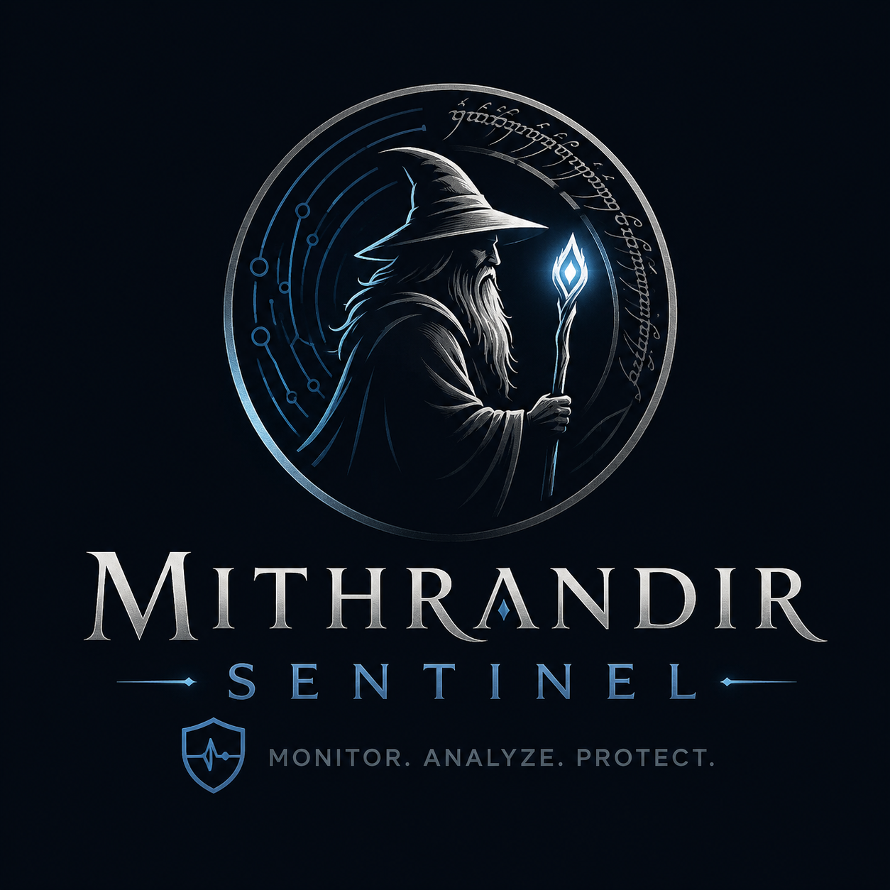

A modern defensive cybersecurity monitoring tool built with C# · WPF · MVVM. Real-time TCP telemetry, live threat detection and a modern SOC-inspired monitoring interface.

Separation of concerns across every layer. Lightweight messaging via WeakReferenceMessenger keeps ViewModels decoupled while sharing a live connection repository.
Views → ViewModels → Services → Models / Core ├── NetworkService // OS TCP retrieval ├── ThreatDetectionService // alert generation ├── ConnectionRepository // shared live data └── WeakReferenceMessenger // VM ↔ VM comms
Four operator screens captured from the running application.
Source code, build instructions and releases live on GitHub.
OPEN REPOSITORY